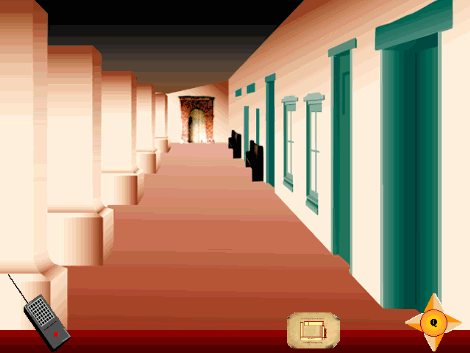
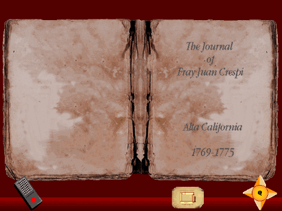

Storyboard Graphic 2 from "This Old Mission."
The Storyboard Graphics illustrated on this page provide (a) an introductory image from a Macromedia Director video introduction (Storyboard Graphic 1), (b) a still image from a virtual walkthrough portion of the CD-ROM (Storyboard Graphic 2), and (c) one example of a virtual text with clickable page content, and audio and visual components. The task bar at the bottom of the screen was an early version of the navigational format prepared in an early student multimedia project undertaken at San Juan Bautista.
The images on this page were created from photographs by Institute of
Archaeology student Ken Halla in 1998. For Further Information on
this or related Institute Projects, contact Ruben Mendoza at ruben_mendoza@monterey.edu.
Storyboard Graphic 1

Storyboard Graphic 3